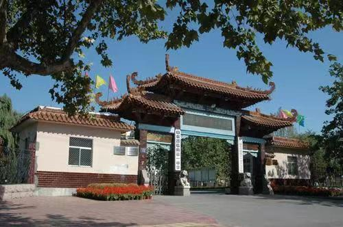

临朐县第一中学
学校简介：
山东省临朐县第一中学是一所具有深厚文化底蕴和优良办学传统的市属重点中学、省级规范化学校。始建于1952年。占地面积71600平方米，建筑面积56000平方米，固定资产4000万元。现有教学班55个，学生3600余人，教职工270人。
学校基础设施完善，教育教学设备现代化。拥有教学实验大楼2幢，图书楼1幢，教师公寓楼3幢，学生公寓楼3幢；有高标准的物理实验室4个，化学实验室3个，生物实验室1个；已建成闭路电视双控系统和百兆校园网及电子阅览室，学校微机室配有计算机280台，办公室达到人手一机，多媒体教室、画室、琴房等功能教室设施齐全，均达到省级一流标准；学校体育馆大楼建筑面积3800平方米，拥有标准篮球场、羽毛球场、乒乓球场和多功能健身场，是山东省普通高中标准较高的体育馆。400米标准塑胶跑道的体育场2006年建成并投入使用。学校重视育人环境的营造，建有内容丰富的文化长廊。名人画像、书法作品等格调高雅的校园文化，使广大学子在耳濡目染中受到熏陶。
建校60多年来，学校在不断深化改革、不断更新教育理念中阔步前进。学校始终坚持“科学管理，科研兴校”的办学思路，建立和实行了一整套科学合理的岗位责任、考核奖惩办法等规章制度，促进了学生良好的学习习惯、文明有序的生活习惯的养成。教学管理科学有章，教科研年年上台阶。每年都有近百篇教育教学论文在各级刊物发表或研计会上交流。
50多年的风雨铸就，学校逐渐确立了“以人为本，注重素质，全面发展，培养特长”的办学思想，一切为了学生，为了一切学生，为了学生的一切，在教育教学中大力倡导“尊重教育”“诚信教育”“感恩教育”，在中学生心理健康教育、音体美特长生培养方面形成了自己的办学特色。曾受到中央教科所的表彰奖励，获潍坊市教育科研一等奖，学校成为山东省中学生心理健康教育会员单位。在艺术特长生培养上，注重分流，因材施教，每年考入艺术高等院校的就有近200人。2000年山东省中学生田径运动会上学校体育代表队获得了丙组团体第一名，并获体育道德风尚奖。高考连年上台阶。连续9年居潍坊市前三位。2002年本科进线619人，申文超以707分的优异成绩获山东省理科第三名，潍坊市理科第一名；2003年本科进线646人，30多名同学被重点院校录取，其中，刘振等3人被清华大学录取，张敏被北京大学录取，王晴雷等3人被中央美术学院录取；2004年本科进线772人，252人进入重点本科，20多人被清华、北大等十大名校录取；2005年重点本科上线260人，本科上线突破800人，张永昌以688分的成绩夺得全县理科第一名，被清华大学录取，董青以685分被北京大学录取，另有30多人被南京大学、浙江大学等名校录取；2006年高考本科上线再次突破800人，赵斌以686分获全县理科第一名，并获潍坊市鸿启奖学金二等奖，被清华大学录取，张曈以626分获全县文科第一名，2010年王悦702分获全县理科第一名，另有一大批同学被全国重点大学录取。